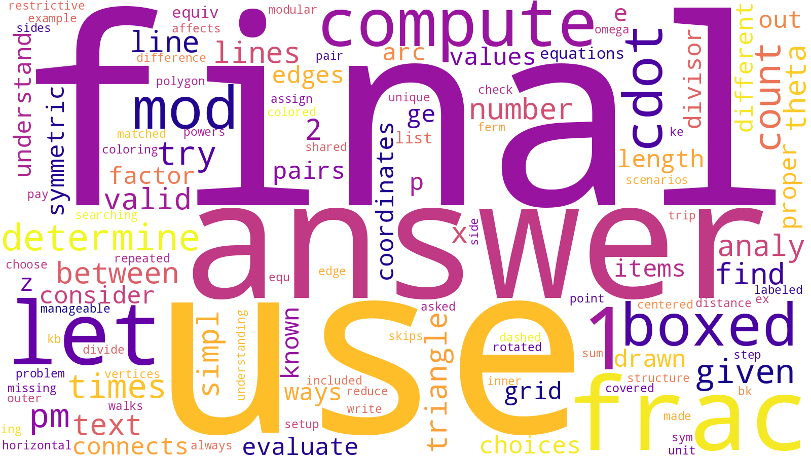
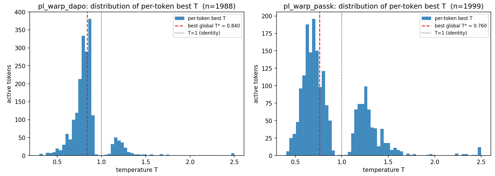

Beyond Temperature: Token-Adaptive Logit Transformations Learned with RLVR
Timothy Gao, Rishi Athavale, Alex Luu, Harsha Polavaram, David Yang, Aryan Bansal
May 15, 2026
Each gray point is the same Full-RLVR Qwen3-1.7B checkpoint evaluated at a different sampling temperature on MATH-500; together they trace an accuracy–diversity Pareto frontier. Stacking LogitMLP on top of the same checkpoint (orange) sits well above the frontier on both axes: higher best@1 than the lowest-$T$ setting, and higher best@8 than the highest-$T$ setting.
Why should temperature work in the first place?
After we've spent millions of dollars pretraining a model, more millions post-training it, and shipped the result to production, we still divide its logits by a scalar $T$ before sampling. Adjusting this single number reliably improves downstream metrics across nearly every model and benchmark. Even after training has converged, an inference-time transformation of the output distribution can still produce non-trivial gains.
But this raises a natural question:
Is multiplying logits by a scalar really the right inference-time transformation?
A growing body of work suggests it isn't. Sampling methods like top-$k$, top-$p$ (nucleus), and min-$p$ exist precisely because reshaping the distribution beyond a uniform scaling is useful. Entropy-adaptive samplers like Mirostat, EDT, and Entropix exist because next-token distributions vary greatly across tokens, so applying a single temperature and sampling rule globally is suboptimal.
Sampling methods reshape the distribution
Per-token entropy varies along the trace
Figure 1. Left: temperature is one of many ways to reshape a next-token distribution — top-$k$, top-$p$ (nucleus), and min-$p$ each apply a different non-temperature transformation, and entropy-adaptive samplers like Mirostat, EDT, and Entropix compose these per token. Right: empirically, the entropy of the next-token distribution varies dramatically across a chain-of-thought trace, with most positions low-entropy and a few sharp branching points, so a single global sampler is regime-agnostic.
These point to two distinct limitations of temperature:
Expressivity. A scalar $1/T$ can sharpen or flatten the distribution, but it cannot, for example, zero out a long noisy tail of low-probability tokens.
Token-uniformity. Recent analyses of chain-of-thought reasoning show that next-token distributions cluster into two regimes: most tokens are low-entropy continuations (suffixes, finishing a number), while a small minority of high-entropy "forking" tokens sit at branching points in the reasoning trajectory — yet temperature is regime-agnostic.
A more expressive transform
Let $\ell_t \in \mathbb{R}^V$ be the logits at position $t$ over a vocabulary of size $V$. Temperature scaling is the map $\ell_t \mapsto \ell_t / T$. Truncation rules like top-$k$ and top-$p$ send the tail of $\ell_t$ to $-\infty$. All of these — and their compositions — are special cases of monotonic transforms: maps that preserve the relative ordering of the logits, and therefore the base model's argmax and top-$k$ predictions.
We pick the simplest non-trivial generalization: a two-piece monotonic function with two slopes and a breakpoint,
When $s_1, s_2 > 0$ this is strictly increasing, so the token ranking is preserved exactly — LogitMLP cannot rerank, only reshape. The family is rich enough to contain several familiar decoders as special cases: temperature ($s_1 = s_2 = 1/T$), top-$k$-like sharpening (small $s_1$ with $b$ between the $k$-th and $(k\!+\!1)$-th logit), and anti-overconfidence ($s_2 \ll s_1$ with $b$ just below the top logit, flattening an over-committed head).
Crucially, the family lets us independently stretch the head and the tail of the logit distribution — something a scalar cannot do. The widget below lets you try the transform directly. The left panel shows the transform itself; the right panel shows how it actually reshapes the next-token distribution on a representative logit vector.
Figure 2 · The piecewise monotonic logit transform
One family that contains temperature, top-k-like sharpening, and anti-overconfidence.
f(ℓ) = s1 · ℓ + (s2 − s1) · ReLU(ℓ − b)
Transform · f(ℓ) vs ℓ
f(ℓ)
identity (T = 1)
Probabilities · softmax over a sample vocabulary
original
transformed
s11.00
s21.00
b4.00
Temperature is the special case s1 = s2 = 1/T. Setting the slopes apart lets the head and the tail of the logit distribution be reshaped independently — strictly more expressive than scaling, while still preserving the model's top-k ranking.
Making it token-adaptive
To address the second limitation, we condition $(s_1, s_2, b)$ on the current token's own representation. At step $t$, let $h_t \in \mathbb{R}^d$ be the post-final-norm hidden state. We concatenate $h_t$ with three detached statistics of the logit vector — $\max(\ell_t)$, $\mathrm{mean}(\ell_t)$, $\mathrm{std}(\ell_t)$ — and feed the result to a 2-layer MLP $\phi_\theta : \mathbb{R}^{d+3} \to \mathbb{R}^3$:
so the slopes are bounded multiplicatively (at most a $4\times$ deviation from temperature 1) and the breakpoint is anchored in the high-probability region of the logit distribution. The final next-token distribution is $p_t = \mathrm{softmax}(f(\ell_t;\, s_1, s_2, b))$.
Figure 3. LogitMLP architecture. The base LLM is frozen. At each position, the post-final-norm hidden state $h_t$ feeds a small MLP that emits $(s_1, s_2, b)$, the parameters of a piecewise-linear monotonic transform $f$ applied to the logits before softmax.
For the default hidden width $d_{\text{mlp}} = 256$ on Qwen3-1.7B (with hidden size 2048), $\phi_\theta$ has approximately 525K parameters — well under 0.1% of the base model. This is a deliberate design choice. The MLP can in principle implement a different transform at every decoding step, but it has very little capacity with which to memorize task knowledge. Whatever gains it produces have to come from a better output transformation, not from learning math.
Training: RLVR with the base model frozen
We train $\phi_\theta$ with RLVR — specifically, DAPO1 with group-relative advantages — on the DAPO-Math-17K dataset, while keeping all 1.7B base-model parameters frozen. Rollouts are sampled under the transformed distribution, and the MLP outputs influence the trajectory and the log-probabilities; the policy gradient backpropagates only through $\phi_\theta$. We initialize $\phi_\theta$ so the transform starts at near-identity, with the KL to the base distributions below $10^{-4}$.
We consider two RLVR objectives. Standard DAPO (pass@1) optimizes the mean reward across a rollout group. A pass@$k$ variant replaces the group baseline with the analytical pass@$k$ estimator of Chen et al., effectively encouraging the policy to maximize the maximum reward across a group of $k$ rollouts. The pass@1 objective rewards being right on every rollout; pass@$k$ rewards being right at least once, which incentivizes exploration.
Results
We post-train Qwen3-1.7B on DAPO-Math-17K and evaluate on MATH-500. Baselines are (i) the best of a global temperature sweep ($T \in \{0.3, 0.5, 0.8, 1.0, 1.3\}$), denoted GLOBAL-$T^\star$, and (ii) full-parameter RLVR fine-tuning at the same data and compute budget. We report pass@$k$ via the unbiased Codex estimator over $n = 16$ rollouts per problem.
Finding 1: LogitMLP recovers most of full-parameter RLVR on pass@1
Trained with the standard DAPO (pass@1) objective, LogitMLP closes most of the gap between the base model and full-parameter RLVR:
Method
Mean acc.
Worst@8
Best@8
Best global $T^\star$
0.231
0.051
0.496
LogitMLP (pass@1)
0.523
0.240
0.682
Full-param RLVR (pass@1)
0.534
0.298
0.742
Table 1. MATH-500 on Qwen3-1.7B. A two-piece monotonic transform of the logits — trained on under 0.1% of the parameters, without modifying any base weight — captures most of what RLVR teaches the model.
LogitMLP cannot rerank tokens, acquire new knowledge, or change internal representations, so any portion of full-RLVR's benefit that requires those things is unreachable by construction. We also found that using the optimal sampling temperature alone improves significantly over sampling naively ($T = 1$), with up to a 10-point increase in pass@$k$. One perspective is that temperature inherently fixes some measure of calibration, and its effectiveness here suggests that the base model is not well-calibrated. This is known to be true for small models and post-trained models. On such models, our results suggest a non-trivial fraction of what RLVR teaches is expressible at decode time, not in the weights. We find this holds for both the Qwen and Llama model families (see paper).
Finding 2: Pass@k gains are diversity, not reasoning
When we instead train LogitMLP with the pass@$k$ objective and decompose the result by metric, an interesting pattern emerges:
Method
best@8
mean acc.
worst@8
entropy
uniq/8
Best global $T^\star$
0.496
0.231
0.051
0.396
0.219
LogitMLP (pass@k)
0.786
0.328
0.062
1.267
0.566
Full-param RLVR (pass@k)
0.692
0.427
0.146
0.473
0.256
Table 2. Pass@$k$-trained LogitMLP beats full-parameter RLVR on best@8 by 9.4 points, but loses on mean and worst@8. The gain is entirely sampling-driven: answer entropy nearly triples and the expected number of distinct answers in an 8-subset more than doubles.
LogitMLP sets the strongest best@8 — by a wide margin — but loses on mean accuracy and worst@8. The empirical answer entropy nearly triples, and the expected number of distinct answers in a random 8-subset more than doubles. The model is not producing more correct rollouts; it is producing more varied ones, and that variance happens to be enough to push best@8 above full RLVR.
This is exactly what we'd expect from an architecture that is allowed to reshape the distribution but not change the model's underlying reasoning. It is learning better sampling, exploring more semantically diverse reasoning paths, while balancing coverage of the answer space with exploitation of likely-correct modes.
LogitMLP shows that better sampling matters more for pass@$k$ than pass@$1$, and reshaping without reranking alone is sufficient for better sampling.
It is also a useful diagnostic for pass@$k$ training more broadly: when an intervention restricted to sampling alone (no new weights, no reranking) can still beat full-parameter RL on best@$k$, that tells you the pass@$k$ objective is rewarding diversity more than capability at this scale.
Finding 3: Stacking on full RLVR breaks the accuracy–diversity frontier
We take a fully RLVR-trained checkpoint and ask: can LogitMLP add anything on top? The natural comparison is sweeping temperature on that same checkpoint, which traces out an accuracy–diversity Pareto frontier. Lower $T$ increases best@1 at the cost of best@8, while higher $T$ has the opposite effect.
Method
best@1
best@4
best@8
avg uniq
entropy
Full-RLVR @ $T = 0.5$
0.492
0.704
0.768
2.03
0.54
Full-RLVR @ $T = 0.7$
0.485
0.718
0.790
2.17
0.61
Full-RLVR @ $T = 1.0$
0.480
0.726
0.798
2.33
0.68
Full-RLVR @ $T = 1.5$
0.465
0.740
0.818
2.73
0.85
+ LogitMLP @ $T = 1.0$
0.549
0.816
0.873
3.60
1.16
Table 3. MATH-500, max response 12,288 tokens. Sweeping temperature on the RLVR-trained checkpoint traces an accuracy–diversity Pareto frontier; stacking LogitMLP on top strictly dominates every point on it.
Stacking LogitMLP on top of the RLVR checkpoint strictly dominates the entire temperature sweep: best@1 (0.549) is higher than the highest best@1 in the sweep ($T = 0.5$, 0.492); best@8 (0.873) is higher than the highest best@8 in the sweep ($T = 1.5$, 0.818); average unique correct solutions and answer entropy are both higher than the most exploratory temperature setting. The figure at the top of this post visualizes this dominance.
A learned, token-adaptive policy can sharpen at well-calibrated positions while injecting exploration only at positions where the diversity is actually beneficial. This is the kind of behavior a scalar cannot reach.
Finding 4: Where LogitMLP fires, and what it does there
Findings 1–3 say that LogitMLP works. What is the trained head actually doing? We teacher-force both variants on 80 base-model rollouts (~48K positions on MATH-500) and ask where the head moves the base distribution. At over 95% of positions, it leaves the base untouched — $\mathrm{KL}(\text{warp}\,\Vert\,\text{base}) < 10^{-5}$. The action concentrates on a small active set: 1.1% of positions for pass@1 LogitMLP, 6.7% for pass@$k$. We highlight similar results for Llama in the paper.
That active set is not the high-entropy tail. It is the subset of moderately confident positions (base top-1 prob ≈ 0.3–0.85), where the model has narrowed to a few candidate strategies but has not yet committed. The tokens the base assigns mass to there — use, find, let, given, compute, consider — are reasoning-step-initial words in both variants. The head leaves routine tokens alone and spends its KL budget at the forks.

LogitMLP (pass@1)
LogitMLP (pass@$k$)
Figure 4. Tokens chosen by the base model at LogitMLP-active positions ($\mathrm{KL} > 0.05$), aggregated over 80 rollouts. Both variants concentrate on words that introduce a new reasoning step — use, find, let, given, compute, consider — rather than on punctuation, mid-word continuations, or high-entropy "wide-open" tokens. The high-leverage positions are structural choice points, where the model has to commit to a strategy for the next step.
What does the head do once it's there? For each active position we sweep a global temperature $T$ on the base logits and pick the $T^\star_t$ that best matches the warped distribution — a per-position scalar summary of the warp's direction and magnitude. $T^\star < 1$ means the head sharpened the base at that position; $T^\star > 1$ means it flattened.

Figure 5. Distribution of per-token effective temperatures $T^\star_t$ across active positions, for pass@1 (left) and pass@$k$ (right) LogitMLP. Dotted line at $T^\star = 1$ marks the identity (no warp); the dashed red line marks each head's best single global temperature. Pass@1's distribution is narrow and centered just below 1, with a thin right tail of extreme flatteners. Pass@$k$'s is wider and visibly bimodal: a sharpening mode near $T^\star \approx 0.65$ and a flattening mode near $T^\star \approx 1.2$.
Figure 6 · LogitMLP at real reasoning forks
Top-6 candidate tokens under the base distribution and after the LogitMLP transform, at the highest-KL moderate-confidence positions from 80 Qwen3-1.7B rollouts on math problems. Toggle between the two variants.
This is also consistent with — and complementary to — recent findings that RLVR's effective signal concentrates on a small minority of decision tokens at forks in the reasoning trace, rather than spreading uniformly across the trajectory. Those analyses look at the training side — which positions accumulate the gradient norm during full RLVR. We arrive at the same sparsity picture from the opposite end: with every weight in the stack frozen, a tiny last-layer warp still spends nearly all of its KL on the same kind of position (Figure 4). Two very different measurement instruments — gradient flow during training vs. decode-time output reshaping with a frozen base — independently localize RLVR's work to the same sparse subset of fork tokens, which is stronger evidence for the underlying claim than either result on its own.
Discussion: a calibration story
After we wrote the paper, we ran the same recipe on a third model family and got a result we did not expect. Alongside our results for Llama 3.2 (see paper), it points to a larger picture.
Gemma-3-1B: LogitMLP barely moves the needle
We re-ran the exact pipeline on Gemma-3-1B. We found LogitMLP closed essentially none of the gap between the base model and full-parameter RLVR on MATH-500, gaining roughly a percentage point on best@1 and a comparably small amount on best@8.
LogitMLP is strictly more expressive and should do at least as well as a global temperature, so we swept temperature as a sanity check. The same range that lifts Qwen by ~10 points on best@$k$ between $T = 0.5$ and $T = 1.5$ moves Gemma almost not at all:
$T$
Mean acc.
Best@8
$T = 0.3$
0.374
0.602
$T = 0.5$
0.374
0.612
$T = 0.7$
0.375
0.618
$T = 1.0$
0.372
0.625
$T = 1.3$
0.371
0.616
$T = 1.5$
0.371
0.605
Table 4. Gemma-3-1B (Chat) on MATH-500 across a temperature sweep. Mean accuracy stays within a $\pm 0.003$ band (0.371–0.374) across the sweep; best@8 within a 1.6-point band (0.602–0.625). For comparison, the same sweep on Qwen3-1.7B traces a ~10-point best@$k$ range (see Table 3 and the hero figure).
Temperature on Gemma-3-1B is not slightly worse than on Qwen — it is functionally inert. Whatever decode-time slack the global $T$ knob exploits on Qwen, Gemma does not have. And if a flexible, token-adaptive transform like LogitMLP cannot find lift either, then the kind of headroom we're after simply isn't at the output layer for this model.
Different models, opposite directions, same correction
That non-result pushed us to look back at the models where LogitMLP does work and ask, mechanically, what part of the distribution does the trained head spend its KL budget on? Two clean patterns emerge:
Figure 7. Two representative active-position behaviors. Left: at an extreme-confidence Qwen3-1.7B position ($p_{\text{top-1}} \approx 0.94$), the pass@1 LogitMLP walks the top-1 mass down to ≈0.63 — the anti-overconfidence direction. Right: at a moderate-confidence Llama-3.2-1B position ($p_{\text{top-1}} \approx 0.40$), every trained Llama head concentrates mass onto the top candidate to ≈0.90 — the anti-underconfidence direction. Mechanically opposite, but unified as corrections toward the well-calibrated middle. (On Qwen, pass@$k$ reverses the action at this kind of position and sharpens instead; on Llama, every objective sharpens.)
These are mechanically opposite operations. The unifying lens is that both are corrections — toward whatever the well-calibrated distribution at a math-reasoning fork looks like: confident enough to commit when there's a clear best strategy, diffuse enough to leave probability on alternatives when there isn't. Llama sits unambiguously on the under-confident side of that middle; Qwen sits far enough on the over-confident side that multiple directions of correction look reasonable to the optimizer, and different objectives find different mixes. In both cases the head learns to pull the base toward the calibrated middle.
It was calibration all along
Temperature works because the output distribution is miscalibrated. LogitMLP works better than temperature because miscalibration is not the same shape at every token, and a single scalar cannot correct a token-conditional miscalibration. And both fail on Gemma-3-1B because Gemma's base output distribution is already well-calibrated — there is no decode-time headroom to find.
This is consistent with two well-documented properties of small post-trained models. Preference-based fine-tuning procedures (RLHF, DPO, and relatives) are known to degrade the calibration of the underlying LM — they sharpen the policy in ways that do not match the underlying answer-probability surface. And smaller base models exhibit systematically worse calibration than larger ones. Both apply to Qwen3-1.7B and Llama-3.2-1B. Gemma-3-1B is, anecdotally, an exception on the calibration axis among small chat models, reflecting deliberate post-training choices — and that exception predicts the inertness we observe.
Roughly, temperature is "fixing" some measure of calibration, and LogitMLP fixes it better — if there is anything to be fixed at all, which is not always the case (e.g., for Gemma).
Limitations and outlook
Our experiments span the 1–2B scale across three model families. Whether the same calibration-headroom fraction holds for substantially larger models is genuinely uncertain — larger models tend to be better-calibrated out of the box, and the calibration-shaped portion of RLVR's lift may shrink with scale. We also evaluate primarily on math, where rewards are easy to verify; calibration on open-ended generation is its own object and may behave differently. The piecewise-linear family is intentionally minimal — richer monotonic families (neural splines, more pieces) would let the transform express finer-grained reshaping, and on miscalibrated models that extra capacity might pay. Conditioning only on the current hidden state misses any trajectory-level cue like "we're about to commit to a wrong calculation here," which a recurrent or attention-based controller could in principle pick up.
The most exciting direction for us is interpretability. The trained policy is a function from hidden states to slopes and breakpoints — examining which hidden-state directions, logit statistics, or token classes drive its decisions could let us extract a simpler, more interpretable mechanistic decoding rule, or even read the calibration correction off directly and feed it back into pre- or post-training as a regularizer. The policy is small enough to make this feasible.
More broadly: as base models grow and full fine-tuning becomes prohibitive for downstream users, learning and interpreting inference-time output transformations on top of a frozen base looks increasingly attractive. They're cheap, compositional with any other adapter, and hot-swappable at deployment. If our reading of the calibration story is right, they are also a measurement instrument — a way to ask, of any base model, how much of its remaining-to-be-learned task knowledge is actually just remaining-to-be-corrected calibration.
Acknowledgements
This project began as a final project for UC Berkeley's EE194 (Scalable AI) course, and would not have happened without it. We are grateful to Professors Anant Sahai and Jiantao Jiao for designing a class that gave us both the technical foundations and the freedom to pursue an open-ended research direction, and to TAs Haocheng Xi and Paul Zhiyuan Zhou for their guidance, feedback, and patience throughout the semester. We also thank NVIDIA, who sponsors the course and provided the 8×H100 compute node on which essentially every experiment in this post was run. Many of the ablations and qualitative analyses here are direct consequences of being able to iterate quickly on real RLVR runs; we are very lucky to have that resource available to a class project.
The full paper, project page, and code will be linked here once the anonymous review period concludes.
DAPO (Yu et al., 2025) is a GRPO-derived RLVR objective with no KL penalty, decoupled clipping thresholds ("clip-higher"), and dynamic sampling that discards all-correct and all-incorrect rollout groups. ↩
Citation
@article{2026logitmlp,
title = {Beyond Temperature: Token-Adaptive Logit Transformations Learned with RLVR},
author = {Anonymous},
year = {2026},
eprint = {2505.XXXXX},
archivePrefix = {arXiv},
primaryClass = {cs.LG},
url = {https://arxiv.org/abs/2505.XXXXX}
}